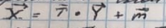
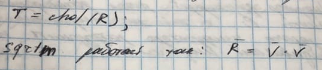
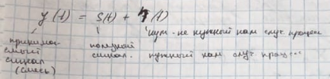

Лекция 1. (02.09.19)Общие задачи модулирования.Иерархия моделей.Классификация моделей.Имитационное моделированиеАдекватность моделиЛекция 2. (16.09.19).Моделирование случайных чисел (Моделирование случайных величин).Классификация случайных величинДатчик случайных чиселФормирование дискретных случайных величинЛекция 3 (30.09.19). Моделирование гауссовских случайных величинФормирование гауссовской случайной величиныФормирование гауссовской случайной величины с произвольными m и δ^2Формирование рэлеевской случайной величиныОбщий метод формирования случайных величинФормирование случайных векторовФормирование гауссовского случайного вектора с независимыми компонентамиЛекция 4 (14.10.19). Формирование гауссовского случайного вектора с зависимыми компонентами Моделирование систем связиЛекция 5 (28.10.19). Модели каналов связиЛекция 6 (11.11.19). Модель изменения уровня сигнала во времени в многолучевостиМодели случайных процессов в информационных системахЛекция 7 (25.11.19). Фильтрация в информационных системахФильтр КалманаЛекция 8 (9.11.19). Вычислительная сложность алгоритмов
МИС - моделирование инфокоммуникационных систем.
Лекция 1. (02.09.19)
Общие задачи модулирования.
Модель — образ или копия.
Моделирование — замещение некоторого объекта его копией.
Сам модулируемый объект (информационные системы) — оригинальная модель-заменитель объекта модели оригинала, которая обеспечивает возможность изучения некоторых свойств оригинала.
Для полного изучения свойств объекта (информационные системы) необходимо сделать натуральный эксперимент (сделать систему, включить её и проверить работоспособность).
100%-ой гарантией проверки работоспособности системы является натурный эксперимент, но это либо дорого, либо невозможно.
Известные способы исследования математической модели:
- Аналитическое исследование;
- Исследование с использованием численных методов;
- Имитационное моделирование.
При аналитическом исследование:
- Сначала на основе на основе известных физических законов составляют уравнение или систему уравнений, которая описывает исследуемую систему.
- Эти уравнения решаются, а на основе решения делается вывод о работоспособности модулируемой системы.
- Основной недостаток аналитического подхода — это сложность или невозможность решения полученных уравнений. К сожалению, даже решение несложных уравнений либо невозможно, либо затруднено.
- Аналитическое исследование практически не используется, а применяется только для проверки модели.
Исследование численными (вычислительными) методами:
- Применение численных методов возможно даже для сложных уравнений и систем уравнений, но эти методы являются приближёнными, поэтому требуется оценка погрешности, которая может оказаться более сложной задачей.
Имитационное модулирование (на практике применяется чаще всего):
- Имитация — достижение сходства по каким-либо сходствам.
- Имитационное моделирование (simulation) — метод, позволяющий строить модели, описывающие процессы так, как они проходили бы в действительности.
- При имитационном модулировании с помощью математических уравнений имитируются свойства реального объекта и окружающей среды.
Иерархия моделей.
При модулировании сначала составляется самая простая модель, которая учитывает только некоторые свойства реального объекта.
Следующий уровень модели учитывает больше свойства реального объекта или системы, поэтому эта модель более точна, если свойств недостаточно, то строится ещё более точная модель.
Иерархия наращивается до тех пор, пока не будет достигнута нужная точность или пока не будет исчерпаны ресурсы для разработки модели.
Производительность вычислительных устройств быстро растёт, но сложность решаемых задач растёт ещё быстрее.
Классификация моделей.
По принципам построения:
- Аналитические модели;
- Имитационные модели.
Исходя из характера исследуемых процессов:
Детерминированные процессы
Отсутствует учёт случайных факторов. Элементы этой модели заранее точно установлены и поведение можно точно предсказать.
При построении детерминированной модели используются алгебраические, дифференциальные, интегральные уравнения.
Стохастические процессы
Учитывает случайный характер в процессах исследуемых моделей и систем. Описывается теорией вероятности и статистическими методами.
На практике большинство моделей стохастические.
Стохастические модели учитывают следующие случайные факторы:
- внутреннее состояние модели;
- внешние дестабилизирующие факторы.
По характеру представления информации:
- Непрерывные модели;
- Дискретные модели.
Большинство моделей носит дискретный характер. Информация в этих моделях представляется в виде последовательности чисел (отсчётов).
По поведению моделей во времени:
Статические модели
Описывают поведение модели в определённый момент времени.
Динамические модели
Описывают поведение модели в течении времени (продолжительно)
Имитационное моделирование
Имитационное моделирование целесообразно применять при наличии одного из следующих условий:
- Не существует законченной математической задачи;
- Аналитически сложно описать систему;
- Аналитическое решение не существует;
- Аналитические решения имеются, но их реализация невозможна из-за недостаточной подготовки, например, работников;
- Необходимо осуществлять наблюдение процессов в течении времени;
- Требуется изменение шкалы времени (замедление или ускорение процессов).
Адекватность модели
Адекватность — степень соответствия модели реальному объекту.
Иерархия модели содержит в себе модели с разной степенью адекватности.
Задача проверки адекватности возникает в течении всего процесса модулирования.
Недостаток любой модели:
- Модель может содержать несущественные переменные;
- Модель может не содержать существенные переменные;
- Одна или более существенных переменных могут быть известны не точно.
Никакое моделирование не может полностью заменить натурный эксперимент.
Лекция 2. (16.09.19).
Моделирование случайных чисел (Моделирование случайных величин).
При моделировании сложных систем необходимо учитывать наличие случайных факторов:
- Случайный входной сигнал;
- Случайные шумы и помехи;
- Случайные изменения модулирования систем (старение, влияние температуры, влияние механических факторов - удары, вибрация, влияние других неблагоприятных факторов - ветер, туман, дождь).
Если при моделировании не будет производится учёт случайных факторов, то модель будет не адекватной, т.е. не будет соответствовать исследуемой информационной системе.
При моделировании необходимо формировать случайные величины с заданными свойствами.
Неслучайная (детерминированная) величина — величина, численное значение, которой заранее известно.
Случайная величина — величина, которая может принимать случайные значения, т.е. заранее неизвестны.
Большая часть величин, которая используется при моделировании информационных систем является случайными, которые заранее неизвестны.
Для случайных величин существует вероятностное распределение (распределение случайных величин).
Классификация случайных величин
Дискретная случайная величина
Случайная величина, значение которой можно пронумеровать (посчитать).
Частный случай — случайная величина с конечным числовым значением.
Непрерывная случайная величина
Непрерывная случайная величина — случайная величина с непрерывным множеством значений (континуум).
Дискретная случайная величина полностью описывает её распределение.
Если мы знаем распределение случайной величины, то значит мы знаем всё о случайной величине.
Для непрерывной случайной величины вводится понятие — функция распределения и плотность распределения.
Если мы знаем функцию распределения Fx(x) — значит мы всё знаем о случайной величине.
При моделировании информационной системы требуется формировать случайные величины с заданными распределениями.
Датчик случайных чисел
Датчик случайных чисел — вероятностные функции пакета MatLab.
Датчик случайных чисел формирует на основе известных исходных данных, заранее известной последовательности чисел (детерминированные числа).
Алгоритм работы датчика такой, что на его выходе присутствуют числа, которые хаотично меняются, а их свойства похожи на случайные величины. В MatLab это rand():
xxxxxxxxxxx = rand(1); %% - это случайное число в интервале (0, 1)При каждом обращении датчик rand() получает новое случайное число, которое находится в нужном интервале.
Алгоритм работы датчика подобран таким образом, что последующее значение x, получается при каждом обращении к датчику представляет собой последовательность выборочных значений случайных величин с равномерным распределением.
Этот датчик позволяет сформировать случайную величину с равномерным распределением в интервале от 0 до 1.
При модулировании сложных систем, в которых действует большое количество случайных величин, требуется дополнительно оценить качество используемых датчиков случайных величин.
При решении простых задач, мы будем полагать, что датчик генерирует случайные величины идеально.
xxxxxxxxxxy = (b - a) * x + a;x = rand(1);y = (b - a) * x + a; %% - непрерывная случайная величина с равномерным распределеним от a до b.Здесь мы используем одно из основных правил моделирования (формирование) случайных величин, которые заключаются в том, что сначала формируется случайная величина с простым законом распределения, а потом формируем случайные величины с нужным нам сложным законом распределения.
Формирование дискретных случайных величин
Сформировать двоичную случайную величину с равновероятным распределением.

xxxxxxxxxxx = rand(1);if x >= 0.5 ksi = 1;else ksi = 0;end;xxxxxxxxxxx = rand(1);if x >= 1 - p; ksi = 1;else ksi = 0;end;При повторном запуске этой программы, мы получим новое значение непрерывной случайной величины x и новое значение дискретной случной величины ksi.
С помощью двоичной случайной величины можно сформировать любую дискретную случайную величину с нужным нам распределением.
Лекция 3 (30.09.19). Моделирование гауссовских случайных величин
Формирование гауссовской случайной величины
Гауссовская (нормальная) случайная величина очень часть встречается в технической связи. Обычно шумы и помехи в системе связи имеют гауссовское или нормальное распределение.
В технических системах помеха представляет собой сумму различных воздействий.
Обычно помеха представляет собой сумму различных случайных помех, каждая из помех не обязаны иметь гауссовское распределение.
В теории вероятности существует центральная предельная теорема — сумма большого количества случайных величин — это случайная величина, закон распределения который приближается к гауссовскому распределению по мере увеличения количества составляющих суммы.
Условия справедливости центральной предельной теоремы:
- Вклад всех слагаемых суммы примерно одинаков;
- Члены суммы независимы.
На практике эти условия выполняются очень часто.
В MatLab имеется специальный датчик, который формирует случайные величины, это randn().
Датчик randn — генерирует гауссовскую случайную величину, у которой m = 0, δ^2 = 1:
xxxxxxxxxxx = randn(1);При выполнении этой строки формируется одно выборочное значение x случайной величины X с параметрами m = 0, δ^2 = 1.
В случае, если в программной среде отсутствует датчик гауссовской случайной величины, то можно сформировать гауссовскую случайную величину путём использования центральной предельной теоремой.
Тогда n раз обращаемся к датчику нормального распределения и n раз находим сумму.
Формирование гауссовской случайной величины с произвольными m и δ^2
Сформируем случайную гауссовскую величину с помощью:
xxxxxxxxxxx = randn(1);Формируем новую случайную величину:
Программа в Matlab (формируем гауссовскую случайную величину с произвольными параметрами):
xxxxxxxxxxd = delta^2;x = randn(1);y = sqrt(d) * x + m;Формирование рэлеевской случайной величины
Предположим, что x1 и x2 — случайные величины и независимы друг от друга.
И также предположим, что они гауссовские:
Длина вектора с независимыми гауссовскими компонентами будет рэлеевской случайной величиной.
В системах связи рэлеевской случайной величиной описывается случайной амплитуда сигнала.
Программа в Matlab (формируем рэлеевскую случайную величину, описывающую случайную амплитуду сигнала в системах связи):
xxxxxxxxxxx1 = randn(1);x2 = randn(1);l = sqrt(x1^2 + x2^2);Общий метод формирования случайных величин
Сначала формируем случайные величины с помощью закона простого закона распределения (например, с равномерным распределением или гауссовским распределением), а затем с помощью преобразований получаются случайные величины с нужным нам законом распределения.
Формирование случайных векторов
Очень часто необходимо сформировать множество случайных величин с заданным законом распределения, в данном случая говорят, что надо сформировать случайный вектор.
Эти случайные величины, т.е. компоненты случайного вектора могут быть зависимыми, а могут быть независимыми.
Если они независимы, то каждый компонент может сформировать отдельно и объединить в один вектор, а если они зависимы, то формировать их надо все вместе с учётом этой самой зависимостью.
Вторая проблема — как сформировать случайный вектор, чтобы время вычисления было минимальным.
Пример 1.
Надо сформировать вектор из независимых случайных величин с равномерным распределением от 0 до 1.
В результате получается массив (вектор).
Языки программирования делятся на 2 категории:
- Языки, использующие компиляцию;
- Языки, использующие интерпретатор.
Для перевода с языка программирования понятного человеку на язык машинных кодов, который понятен компьютеру (язык 0 и 1, бинарный код) требуется сделать перевод, т.е. трансляцию с помощью транслятора.
Существует 2 способа трансляции:
- Первый способ предполагает, что весь текст программы транслируется в машинных код, а потом они выполняются, такое способ называется компиляцией.
- Второй способ предполагает, что каждая строка написанной программы транслируется в машинный код и сразу выполняется, потом следующая строка — это называется интерпретацией.
Если программа носит последовательный характер, то время выполнения одинаково.
Если программа содержит циклы, то интерпретатор выполняет эту программу медленнее, чем компилятор.
Система MatLav - интерпретатор.
Если n = 1000, то t выполнения программы (3) по сравнению с (2) будет меньше в 50 раз.
Поэтому при написании любых программ на MatLab целесообразно избегать циклов.
В тех случаях, когда избежать цикла невозможно (особенно вложенных друг в друга), то целесообразно пользоваться встроенным компилятором MatLab.
При работе с MatLab целесообразно сначала составить программу, и если время выполнения окажется большим, то её необходимо оптимизировать путём компиляции отдельных строк или избежать циклов.
Формирование гауссовского случайного вектора с независимыми компонентами
Пример 2.
Пример 3.
Пример 4.
Лекция 4 (14.10.19). Формирование гауссовского случайного вектора с зависимыми компонентами
Задача состоит в том, чтобы сформировать случайный вектор с гауссовским распределением и с зависимыми компонентами.
Для того чтобы задать требуемую зависимость между компонентами формируемого случайного вектора нужно задать его корреляционную матрицу R, которая содержит коэффициент корреляции между любыми двумя компонентами нашего случайного вектора.
Кроме того нужно задать вектор математического ожидания M, т.е. вектор компоненты которого являются математическим ожиданием всех компонентов нашего случайного вектора.
Задача состоит в том, чтобы найти аналитический алгоритм вычисления выборочных значений случайного вектора X.
Воспользуемся традиционным подходом — формируем случайный вектор Y, у которого компоненты независимы или не коррелированы и имеют нулевые математические ожидания. Дальше путём некоторого преобразования вектора Y с независимыми компонентами сформируем нужный нам X зависимыми компонентами.
Воспользуемся теоремой из теории вероятностей, согласно который линейные преобразования гауссовского вектора представляют собой тоже гауссовский вектор.

где матрица T — некоторая матрица (детерминированная)
Для решения задачи формируем случайные гауссовские вектора X. Надо найти матрицу T такую, чтобы искомый вектор X имел нужную нам корреляционную матрицу R.
Используя тот факт, что матрица T не случайная, а детерминированная, продолжим равенство:
Не из каждой матрица можно извлечь квадратный корень, а только из матрицы, которая называется положительно определённой.
Задача формирования гауссовского случайного вектора с заданной корреляционной матрицей имеет решение не всегда, только тогда, когда из матрицы R возможно извлечь квадратный корень, т.е. матрица R - положительно определенная.
В принципе возможно заранее не вычислять корень из матрицы. Существует критерий — критерий Сильвестра, который позволил определить можно ли извлечь корень из матрицы:
Можно сделать разложение Холецкого для корреляционной матрицы R и получить матрицу T:

Для нашей задачи, учитывая симметричные матрицы R оба метода годятся:
Программа в MatLab:
xxxxxxxxxxy = radn(n, 1);T = chol(R);x = T * y + m;Здесь видны преимущества системы MatLab, даже сложные алгоритмы программируются просто, не требуется высоких математических знаний.
Моделирование систем связи
В системах связи источником сообщений является поток бит, т.е. поток двоичных случайных величин. Это информационный поток может нести информацию разного рода (речь, изображение, видео, файлы, таблицы и т.п.).
Шифратор формирует поток зашифрованных данных bi с той же скоростью, что и ai и задача шифратора затруднить НСД к передаваемой информации.
Кодер источника — сжимает информацию в bi последовательно коррелировать по времени, а кодер источника делает информацию не коррелированную по времени (увеличивает энтропию, умножает v, также устраняется избыточность сообщения.
Помехоустойчивый кодер — вводит дополнительную избыточность передаваемой информации с целью повышения помехоустойчивости.
На выходе модулятора присутствует комплексные символы с соответствие с заданной модуляции.
В канале связи происходит непреднамеренное искажение сигнала, а также присутствует шумы и помехи, эти искажения, шумы и помехи зависят от вида канала связи (проводной/беспроводной, мобильный/стационарный и т.д.).
Демодулятор даёт двоичный поток:
При передачи информации в системах связи возникают ошибки всегда.
При моделировании надо оценить вероятность ошибки в нашей системе.
В любых системах связи принимаемые символы не совпадают с битами и символами. Для оценки качества работы системы связи при моделировании необходимо измерить вероятность ошибки.
Лекция 5 (28.10.19). Модели каналов связи
Канал связи — это обобщённое название среды распространения сигналов. В каналах связи сигнал подвергает воздействию искажений и помех.
Искажения — изменение форм сигнала. Шумы и помехи обычно накладываются на сигнал.
В системах связи гражданского назначения шумы, помехи и искажения носят естественный (природный) характер.
В системах связи военного назначения бывают ситуации, когда шумы, помехи и искажения делаются намерено для затруднения противнику связи.
Для достижения наилучшего качества связи нужно сконструировать передатчик и приёмник таким образом, чтобы они были наилучшем образом приспособлены к имеющемся каналу связи, поэтому для разработки передатчика и приёмника необходимо узнать свойства канала связи (т.е. модель канала связи).
Если передатчик и приёмник максимально такую информацию о канале связи, то качество информации будет выше, по сравнению, когда информация не используется.
Шумы — обычно тепловые шумы, в связи с движением электронов в проводнике. Мощность зависит от свойств проводника и от температуры, чем температура ниже, тем меньше мощности шума.
Помехи делятся на категории:
Внутренние помехи
Между абонентами одной и той же системой связи. Уровень внутри системы помех может быть снижен путём выбора правильной конструкции систем связи.
Межсистемные помехи
От абонентов других систем связи. Уменьшение уровня межсистемных помех может быть достигнуто путём правильного выбора конструкции систем связи.
Индустриальные помехи
Помехи промышленного происхождения.
Два вида:
- Радиопомехи;
- Помехи по проводам электрической сети.
Источником этих помех являются различные электрические приборы.
Для того чтобы уменьшить уровень индустриальных помех можно административно запретить использовать электрические приборы (что невозможно), другой путь сделать конструкцию электрических приборов такой, что они создавали меньше помех.
Основной путь борьбы с индустриальными помехами — подавление их там где они возникают, т.е. изготовители электрических устройств законодательно обязаны вводить в устройства меры по уменьшению этих помех. Такой путь приводит к увеличению стоимости всех этих устройств.
Существует международная организация СИСПР, которая вырабатывает международные стандарты, связанные с индустриальными помехами.
Уровень шумов и помех может быть снижен, но в канале связи всегда присутствуют помехи и шумы.
- Идеальный канал связи (без шума)

- Модель каналов связи без замираний и АБГШ (аддитивный белый гауссовский шум). AWGN — Additive White Gaussion Noise
Аддитивный — шум, складывающийся с сигнала.
Белый шум — равномерное распределение спектральной плотности, мощности.
Спектральная мощность белого шума постоянна на всех частотах, а мощность белого шума бесконечна.
В реальности белого шума не существует, а тот шум, что считается белым имеет полосу частот шире, чем канал связи.
Модель с АБГШ часто используется при моделировании систем связи.
- Модель канала связи с замиранием и АБГШ
Если коэффициент A является случайной величиной, то говорят, что в канале связи имеются замирания, т.е. шум уровня сигнала.
- Если A рэлеевское распределение , то говорят что замирание рэлеевское, обычно это в радиоканалах, в которых отсутствует прямая видимость передатчика и приёмника.
- Если сеть прямая видимость, то распределение будет:
Самые глубокие замирания (плохие) — рэлеевские.
Модель канала связи с нестационарными замираниями и АБГШ:
В отличии от модели 3, здесь коэффициент А уже не постоянная случайная величина, а следующий процесс зависит от времени.
Такая модель имеет место в системах радиовещаний с подвижными абонентами.
Многолучевая модель каналов связи:
Луч с наименьшей задержкой всегда прямой. При отражении мощность сигнала уменьшается, тем больше путь проходит сигнал, тем больше его задержка, тем меньше его амплитуда.
Явление многолучевости приводит к искажению формы сигнала.
Пример: Q = 2
Продолжение в лекции 6.
Лекция 6 (11.11.19). Модель изменения уровня сигнала во времени в многолучевости
Если отсутствует относительное перемещение в пространстве передатчика и приёмника (т.е. абоненты неподвижны), то амплитуды и задержки являются постоянными величинами.
А если абоненты движутся, то A и τ должны применяться во времени.
Экспериментально установлено, что задержки у лучей при передвижении абонента меняются медленно, а амплитуда быстро.
Модель применяется во времени предоставляет интерес для разработки приёмника.
В стандартах системы сотовой связи приводятся модели изменения амплитуды лучей. Наиболее известная модель — модель Джейкса, которая подразумевает, что представляется в виде суммы девятнадцати гармонических колебаний в разных частотах, фазах и амплитудах, параметры которых постоянны.
Суть модели в том, что меняющиеся во времени случайный процесс представляется в виде суммы составляющих, параметры которых постоянны.
Модель канала связи с многочисленным приёмником.
В силу того, что приёмник антенна находятся на близком расстоянии друг от друга, то задержки будут небольшими и примерно равны.
Модель в векторно-матричном коде:
Модель канала связи в системах связи с несколькими предающими и несколькими приёмниками.
MIMO — Multiple - Input - Multiple - Output

Применение большого количества антенн на передающие и принимающие стороны позволяет во много раз увеличить скорость передачи информации.
Сигнал из каждый под-антенны поступает на все приемные антенны.
Задача приёмник обрабатывать принимающий сигнал Y(t) и получить оценку вектора переданных сигналов S(t).
Коэффициент передатчика является случайными числами и матрица H будет случайной матрицей. В зависимости от условий распространения сигнала различается компоновка матриц H между собой. Бывают коррелированные, и для разработки приёмника необходимо иметь модель этой корреляции.
Значение этой пространственной корреляции, зависит от местности, где распространяется этот сигнал.
Для того, чтобы корректно сделать приёмник и всю систему связи необходимо, как можно точнее, разработать модель канала связи.
В реальном натуральном эксперименте проводится эксперимент с участием реально изготовленного приёмника и передатчика в условиях реальной связи.
Возможен упрощённый натуральный эксперимент, когда вместо реального условия распределения сигнала используют их имитацию, т.е. имитатор канала связи (физическое устройство или программный модуль, в котором имитируются все искажения, шумы и помехи, возникающие в реальном канале связи).
Модели случайных процессов в информационных системах
В теории вероятности рассматриваются три объекта случайных событий, случайных величин, случайных процессов.
Случайные события — это события, которые могут произойти, а могут не произойти.
Для количественной характеристики случайных событий используется понятие — вероятности.
Если событие произойти не может, то его вероятность равна нулю, если событие точно произойдёт, то вероятность равна 1.
Случайные величины — величины, которые принимают случайные значение.
X случайная величина может меняться в зависимости от времени, тогда она называется случайным процессом X(t).
Бывает ситуация, например, системы видеонаблюдения, когда случайная величина зависит не только от времени, но некоторого пространства точек (координат), называется полем.
Модели случайных процессов и случайных полей широко используется в современной технике, например, на основе модели случайных полей существует модель распознавания лиц.
Реализация случайных процессов :
Моделирование случайных процессов — это построение модели его поведения во времени, которая содержит информацию (быстрое или медленно изменение, плавность или скачки, множество его значений дискретно или непрерывно и т.д.).
Поскольку обработка информации ведётся на цифровых вычислительных устройствах, то мы будем рассматривать модель изменения процесса в дискретной форме:
При моделировании наших случайных процессов нужно определить как зависит текущий отсчёт от других отсчётов.
Лекция 7 (25.11.19).
Винеровский процесс:
Модель авторегрессии 1-го порядка:
Модель авторегрессии 2-го порядка:
Существуют модели более высоких порядков, которые учитывают не только 2-го порядка случайные процессы, но и большее число.
Эти модели учитывают какое-то количество значений случайного процесса в прошлом, при формировании его значения в настоящем.
Фильтрация в информационных системах

Необходимо выделить полезный сигнал:
Задача фильтрации состоит в том, чтобы путём обработки принимающего сигнала выделить полезный сигнал, который наблюдается на фоне шума.
Для того чтобы задача фильтрации могла быть решена, нужно чтобы свойства сигнала отличались от свойств шума, и чтобы в приёмнике это отличие было известно и учитывалось.
 — означает, что мы получаем не истинные значения сигнала, а его оценка, которая может отличаться от истинной.
— означает, что мы получаем не истинные значения сигнала, а его оценка, которая может отличаться от истинной.
Алгоритм фильтрации (т.е. вычисление ) должен быть наиболее точным, т.е. минимизировать ошибку фильтрации .
В дискретном времени:
Абстрактное решение можем расписать так:
Зададим критерий точности фильтрации:
В качестве критерия точности обычно берут средний квадрат ошибки фильтрации.
Не рекуррентные алгоритмы фильтрации очень сложные и неудобные при использовании на практике, так как при вычислении текущей не учитывается оценка на предыдущий шаг.
Было бы рациональнее записать фильтрацию так:
когда оценка на текущем шаге  зависит только от последнего отсчёта наблюдаемого сигнала и оценки на предыдущем шаге.
зависит только от последнего отсчёта наблюдаемого сигнала и оценки на предыдущем шаге.
Такой подход называется рекуррентным.
Критерий фильтрации:
Задача в такой постановке была поставлена в 50-е годы XX века, и была решена почти одновременно в США и в СССР (Стратонович в 1959 и Калман в 1961).
Фильтр Калмана
Калман предложил решение задачи фильтрации частного случая, когда уравнении (модели) процесса и модели наблюдения являются линейным процессом, а все шумы являются простыми.
Для работы фильтра нужны начальные условия:
— берутся из априорных сведений (т.е. из сведений, которыми мы обладали до этого). Если раньше не было никаких сведений, то можно взять равным 0, а большим.
Фильтр Калмана реализует идею прогноза и корреляции.
Фильтр Калмана на основе модели процесса (случайной модели авторегрессии 1-го порядка) вычисляет прогноз , после получения отсчёта наблюдаемого сигнала , то фильтр прогноз пересчитывает.
Краткие сведения о уравнении Стратоновича (теория нелинейных фильтров случайных процессов):
Лекция 8 (9.11.19). Вычислительная сложность алгоритмов
Алгоритм — некая последовательность операций, которые нужно выполнить, чтобы получить значение.
Сложность алгоритмов (вычислительная сложность) — это количество арифметических операций, которые нужно выполнить, чтобы решить задачу.
Существует наука теории сложности алгоритмов, которая изучает различные алгоритмы с позиции сложности и подсказывает пути сокращения вычислительной сложности без ущерба результату.
- Входные данные имеют размер N;
- Число операций, которые надо выполнить, чтобы реализовать алгоритм — f(N) — функция сложности